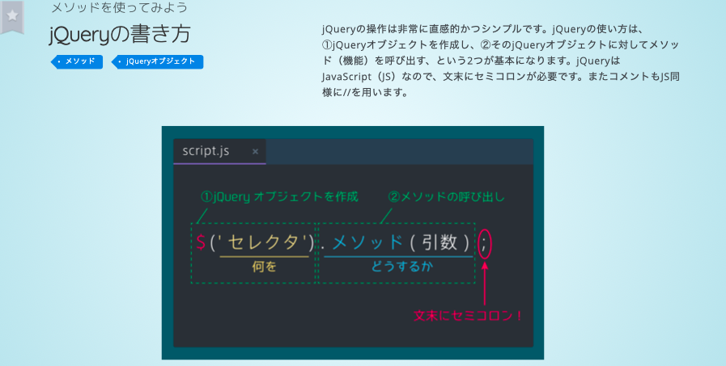
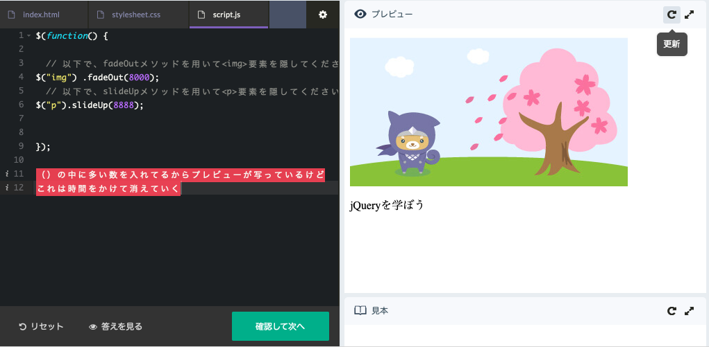
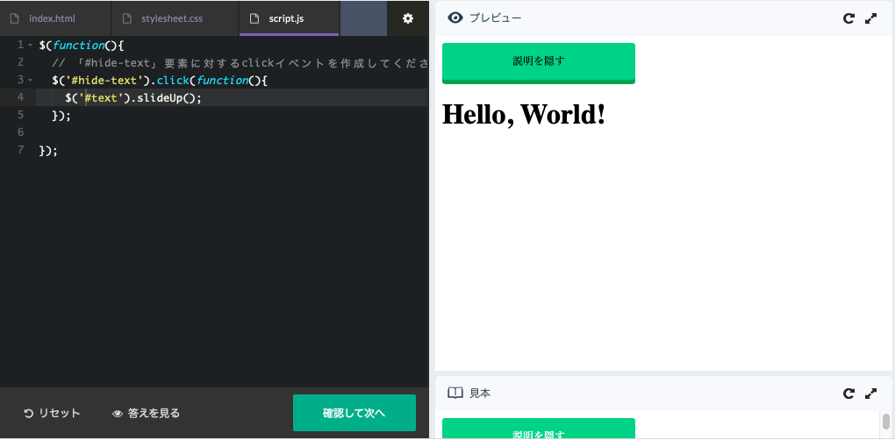
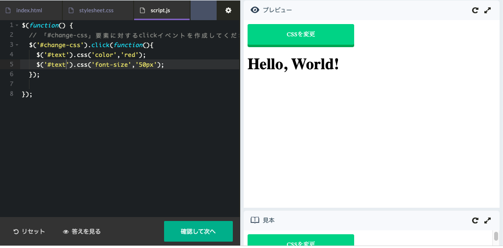
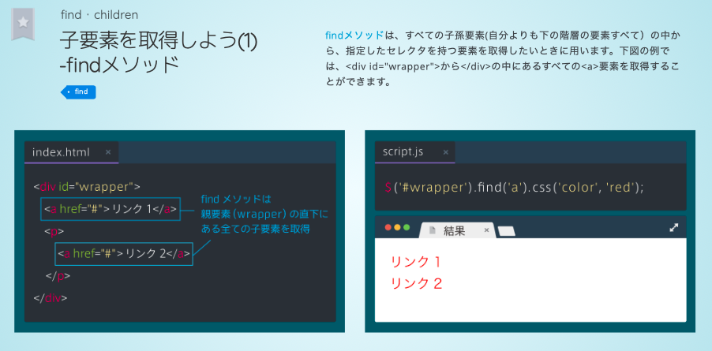
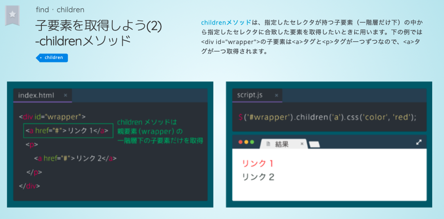
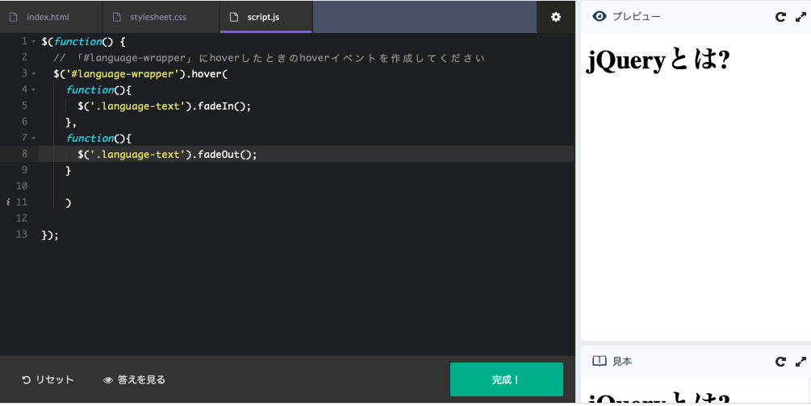

<!DOCTYPE html>
<html lang="ja" dir="ltr">
  <head>
    <meta charset="utf-8">
    <title>jQueryのおさらい(progateのやつ)</title>
    <link rel="stylesheet" type="text/css" href="reviewJquery.css">
    <link rel="shortcut icon" href="faviconForjQueryCheck.ico">
  </head>

<body>
<!-- ここからbody ここからbody ここからbody ここからbody ここからbody ここからbody ここからbody ここからbody -->
<div id="allHide" class="allLight" ></div>


<header>
  <h1>jQueryのおさらい(progateより)</h1>
  <!-- ここに左の目次をここに左の目次をここに左の目次をここに左の目次を -->
  <div id="fixed">
    <h3 id="titleOfContents">もくじ</h3>
    <ul id="tableOfContents">
      <a href="#first"><li> jQueryの基本</li></a>
      <a href="#second"><li>書き方</li></a>
      <a href="#third"><li> function</li></a>
      <a href="#fourth"><li>CSSをチェンジ</li></a>
      <a href="#fifth"><li> text,htmlの変え方</li></a>
      <a href="#sixth"><li>find</li></a>
      <a href="#seventh"><li>children</li></a>
      <a href="#eighth"><li>functionのなかに<br>function</li></a>

    </ul>
  </div>

</header>

<!-- セクション完成したやつから<nav>にまとめてる -->

      <section>
        
        <h2 class="right-title">jQueryの基本</h2>
        <p class="right-explanation"><span class="positionForP">jQueryの使い方の基本<br>
        JSと比べてシンプルに簡単に作れる</span></p>
      </section>

      <section>
        
        <h2 class="left-title">書き方</h2>
        <p class="left-explanation"><span class="positionForP">まずJqueryを使う場合、全体に<em>$( function()   { }) ; </em>をかける<br>
        試しにfadeOutとslideUpをやっている<br>
        （　）の中の数字はアクションにかける時間( 1000で１秒 )</span></p>
      </section>

      <section>
        
        <h2 class="right-title">function</h2>
        <p class="right-explanation"><span class="positionForP">クリックfunctionのやり方</span></p>
      </section>

      <section>
        
        <h2 class="left-title">CSSをチェンジ</h2>
        <p class="left-explanation"><span class="positionForP">functionの中でCSSを変えている<br>
        もし変えたいものが多いならCSS内で別のclassを作り,<br>
        jQUeryのfunction内でclassを変えるのもやり方の一つ</span></p>
      </section>

      <section>
        
        <h2 class="right-title">text,htmlの変え方</h2>
        <p class="right-explanation"><span class="positionForP">上のfunctionはtext（文章）を変えているだけ<br>
        下のfunctionはその文章をまとめてる<em>要素</em>ごと変えている</span></p>
      </section>

      <section>
        
        <h2 class="left-title">find</h2>
        <p class="left-explanation"><span class="positionForP">findを使うと親要素の中の子要素を指定するやり方<br>
        画像にあるように指定した子要素は<em>複数でも全て</em>指定される</span></p>
      </section>

      <section>
        
        <h2 class="right-title">children</h2>
        <p class="right-explanation"><span class="positionForP">childrenを使うとfindと違い、<br>
        <em>一つ下の要素</em>を指定することになる</span></p>
      </section>

      <section>
        
        <h2 class="left-title">functionのなかにfunction</h2>
        <p class="left-explanation"><span class="positionForP">functionのなかにfunctionを置いているだけ<br>
        しかし見た目がすごく複雑になるので注意</span></p>
      </section>


<footer>
  <div id="forFooter">
    <div id="endroll">
      <p class="forFooter">2019/7/8</p>
      <p class="forFooter">progateから</p>
      <a href="../reviewJsJQuery.html" target="_blank"><p>JSはここから</p></a>
    </div>
  </div>

</footer>

<script src="https://code.jquery.com/jquery-3.4.1.js"></script>
<script src="reviewJquery.js"></script>
  </body>


</html>
